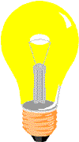

Mit tud a JavaScript?
Kép megjelenítése és eltüntetése!
menüben lévő megjelenítés gombbal tudod előhozni a képet és eltüntetniA
Az átméretez gombbal amely szintén a menüben van át tudod méretezni a képet!


JavaScript megváltoztatja a HTML elemek stílusát
Megvátoztathatatod a bekezdésed kinézetét